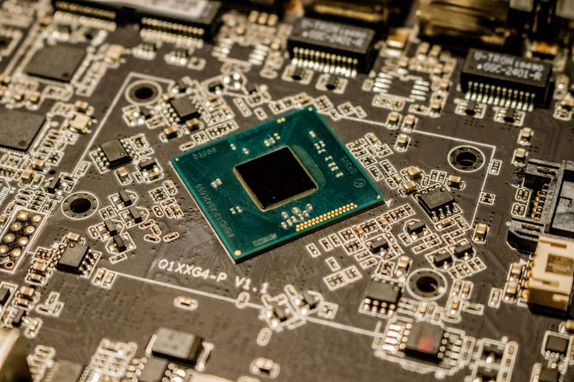

Vision Transformers Explained from the Patch Embedding Upward
Before you can appreciate attention maps and CLS tokens, you need to see how an image becomes a sequence. Here is that journey, built up piece by piece.
Why the patch is the whole idea
Most explanations of vision transformers start with attention, because attention is the flashy part. I think that is the wrong place to start. The genuinely clever move happens before any attention is computed: turning an image into a sequence of tokens that a transformer, which was built for text, can consume at all. Once you understand patch embedding properly, the rest of the architecture stops feeling exotic and starts feeling like a fairly direct application of ideas from natural language processing to a grid of numbers.
A convolutional network never has to solve this problem. It slides small filters over the image and lets locality and translation invariance fall out of the architecture for free. A transformer has no such built-in bias. It operates on a set of tokens plus a positional signal, full stop. So if you want to hand it an image, you first have to decide what a token is. The answer that made vision transformers work in practice is deceptively simple: chop the image into a grid of fixed-size squares, and treat each square as one token.
Take a concrete case. Suppose you have a 224 by 224 pixel RGB image and you choose a patch size of 16 by 16. That gives you a 14 by 14 grid of patches, which is 196 patches in total. Each patch contains 16 times 16 times 3 values, so 768 raw pixel numbers. Nothing clever has happened yet; you have just reshaped the image into 196 vectors of length 768. The transformer does not see pixels arranged spatially any more. It sees a sequence of 196 items, each described by 768 numbers, in exactly the same shape as 196 word embeddings would appear to a language model.
From raw pixels to a token a transformer can use
Those raw 768-length vectors are not yet embeddings in the useful sense; they are just flattened pixel intensities, and pixel intensities are a poor representation for a model to reason over directly. So the next step is a single linear projection: a learned matrix that maps each 768-dimensional patch vector into a chosen embedding dimension, commonly something like 768 again in the original design, or smaller in lightweight variants. This projection is often implemented as a convolution with a kernel size and stride equal to the patch size, which is mathematically identical to slicing the image into patches and applying a shared linear layer to each one. It is one of the few places where the implementation looks convolutional even though the intent is purely to produce a token embedding.
At this point you have 196 vectors that live in a shared embedding space, but the transformer still has no idea where each patch sat in the original image. Attention is permutation-invariant: shuffle the 196 tokens and, absent any other signal, the output would just be shuffled in the same way. Language models solve this with positional encodings, and vision transformers borrow the trick directly. A learned positional embedding, one per patch position, is added elementwise to each patch embedding. Position 37 in the sequence, corresponding to some specific row and column in the 14 by 14 grid, gets a fixed vector added to it that the model learns during training to encode roughly where that patch lives relative to the others.
There is one more addition worth naming: a special learnable token, often called the class token, is prepended to the sequence, taking the count from 196 to 197. This token does not correspond to any patch of the image. Its job is to accumulate information from every other token through attention across the network's depth, and by the final layer its output vector is used as the summary representation of the whole image, typically fed into a classification head. It is the same trick used in some language models, adapted from sequence classification to image classification.
What attention actually does once tokens exist
With 197 embedded, position-aware tokens in hand, the rest of a vision transformer is standard transformer encoder machinery: multi-head self-attention followed by a feedforward block, repeated across many layers, with residual connections and layer normalisation throughout. What is worth dwelling on is what attention buys you specifically for images. Every patch token can attend to every other patch token directly, regardless of spatial distance, in a single layer. A patch in the top-left corner can weigh information from a patch in the bottom-right corner just as easily as from its immediate neighbour, something a convolutional network only achieves after enough layers to expand its receptive field that far.
This is genuinely useful for certain kinds of visual reasoning, such as recognising an object whose defining parts are spread far apart in the frame, or understanding relationships between distant regions of a scene. It comes at a real cost, though. Self-attention across 197 tokens requires computing a 197 by 197 attention matrix per head, and that cost grows quadratically with the number of patches. Halve the patch size to 8 by 8 and you quadruple the number of patches to roughly 784, which multiplies the attention computation by roughly sixteen. This is precisely why patch size is not a minor hyperparameter; it is a direct trade-off between spatial resolution and compute budget, and it is why smaller patch sizes tend to help accuracy on fine-grained tasks while noticeably slowing training and inference.
It is also why vision transformers are known to need more data or stronger regularisation than convolutional networks of comparable size to reach the same accuracy from scratch. A convolutional network's locality and weight-sharing assumptions are a form of built-in prior knowledge about images; a plain vision transformer has to learn spatial structure entirely from data through its positional embeddings and attention patterns, which is a harder learning problem when training examples are scarce.
The practical takeaway
If you remember one thing from this, remember that patch embedding is the translation layer that lets a text-shaped architecture see images at all, and every downstream property of a vision transformer traces back to the choices made there. Patch size sets the sequence length, sequence length sets the attention cost, and the class token plus positional embeddings are what give an otherwise order-blind attention mechanism any sense of layout at all. When you are choosing between a vision transformer and a convolutional baseline for a new problem, do not just compare parameter counts or headline accuracy figures; ask how much data you actually have, because that patch-level design is exactly where the data hunger comes from.
